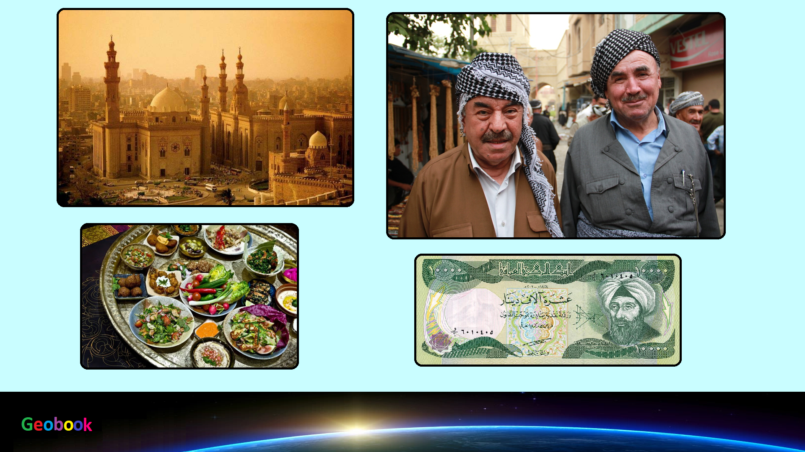

____
Климат
Средние летние температуры на севере достигают +40°С при максимумах в +50-53°С, а в большинстве центральных и южных районов превышают +50°С. Зимой средние температуры колеблются от +4°С до +13-16°С при возможном похолодании до -10°С на севере и до -5°С на юге. При этом в ночное время столбик термометра нередко опускается до +16-19°С летом и до -5-8°С зимой.
Осадков выпадает от 50 мм в год на юге и до 1500 мм на северо-востоке, в основном в зимние месяцы (ноябрь-февраль). При этом в летний период (с мая по октябрь) на большей части территории дождей зачастую не наблюдается вовсе, но влажность воздуха достаточно высока (до 100% в южных районах и до 85% на севере). В северо-восточных районах, на склонах гор, эпизодические ливни нередки в любой период, а зимой случаются достаточно сильные снегопады.
____
